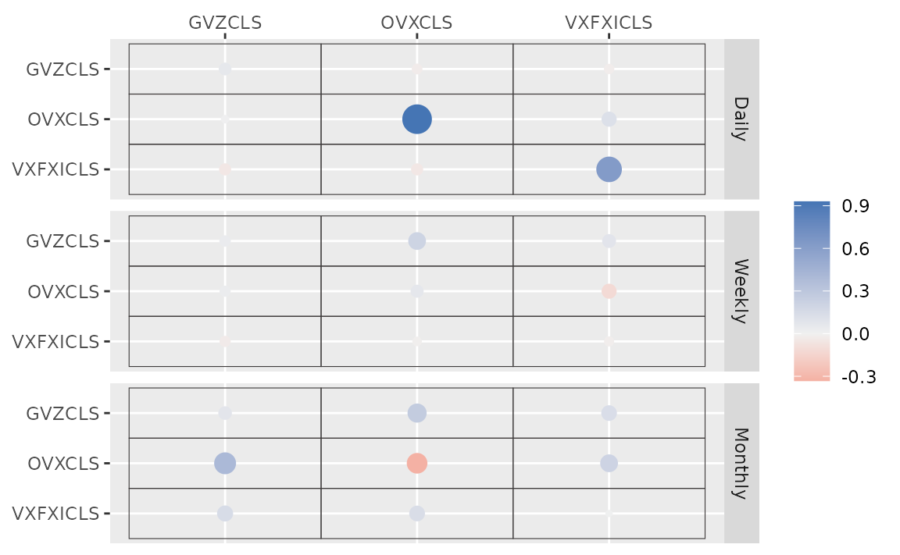

etf <- etf_vix[1:100, 1:3]
# Split-------------------------------
h <- 5
etf_eval <- divide_ts(etf, h)
etf_train <- etf_eval$train
etf_test <- etf_eval$testStochastic Search Variable Selection (SSVS) Prior
-
y: Multivariate time series data. It should be data frame or matrix, which means that every column is numeric. Each column indicates variable, i.e. it sould be wide format. -
har: Order of VHAR -
num_chains: Number of chains- If OpenMP is enabled, parallel loop will be run.
-
num_iter: Total number of iterations -
num_burn: Number of burn-in -
thinning: Thinning -
bayes_spec: Output ofset_ssvs()- By default, use a default semi-automatic approach using
choose_ssvs().
- By default, use a default semi-automatic approach using
-
cov_spec: Covariance prior specification. Useset_ldlt()for homoskedastic model. -
include_mean = TRUE: By default, you include the constant term in the model. -
minnesota = c("no", "short", "longrun"): Minnesota-type shrinkage. -
verbose = FALSE: Progress bar -
num_thread: Number of thread for OpenMP- Used in both Eigen computation and parallel multi-chain loop
- This option is valid only when OpenMP in user’s machine.
(fit_ssvs <- vhar_bayes(etf_train, num_chains = 1, num_iter = 20, bayes_spec = set_ssvs(), cov_spec = set_ldlt(), include_mean = FALSE, minnesota = "longrun"))
#> Call:
#> vhar_bayes(y = etf_train, num_chains = 1, num_iter = 20, bayes_spec = set_ssvs(),
#> cov_spec = set_ldlt(), include_mean = FALSE, minnesota = "longrun")
#>
#> BVHAR with SSVS prior
#> Fitted by Gibbs sampling
#> Total number of iteration: 20
#> Number of burn-in: 10
#> ====================================================
#>
#> Parameter Record:
#> # A draws_df: 10 iterations, 1 chains, and 90 variables
#> phi[1] phi[2] phi[3] phi[4] phi[5] phi[6] phi[7]
#> 1 0.618 0.068513 0.259104 -2.52e-01 1.64e-03 -0.048231 0.005432
#> 2 0.337 0.166057 0.288122 -2.98e-02 1.06e-03 0.007276 -0.000646
#> 3 0.582 0.109518 0.159639 1.68e-02 -1.51e-03 -0.000374 0.007694
#> 4 0.682 0.107775 0.079379 7.76e-03 -3.09e-03 0.000127 0.001528
#> 5 0.810 0.116643 0.003849 -4.55e-03 -6.93e-04 0.000574 0.002257
#> 6 0.819 0.132550 -0.001997 -1.86e-05 -1.94e-02 0.005975 0.001144
#> 7 0.867 0.081561 0.000915 -1.64e-04 1.17e-06 0.000661 0.001379
#> 8 0.830 0.103867 -0.000158 1.40e-03 3.59e-03 0.002496 0.007797
#> 9 0.908 0.041209 -0.003300 8.61e-04 3.13e-03 0.019476 0.001156
#> 10 0.879 -0.000843 -0.000779 -1.15e-03 4.23e-05 0.003282 0.090546
#> phi[8]
#> 1 0.000519
#> 2 0.001328
#> 3 0.004198
#> 4 0.001311
#> 5 -0.000027
#> 6 -0.000843
#> 7 0.002096
#> 8 -0.000312
#> 9 0.000452
#> 10 0.008067
#> # ... with 82 more variables
#> # ... hidden reserved variables {'.chain', '.iteration', '.draw'}autoplot() for the fit (bvharsp object)
provides coefficients heatmap. There is type argument, and
the default type = "coef" draws the heatmap.
autoplot(fit_ssvs)
Horseshoe Prior
bayes_spec is the initial specification by
set_horseshoe(). Others are the same.
(fit_hs <- vhar_bayes(etf_train, num_chains = 2, num_iter = 20, bayes_spec = set_horseshoe(), cov_spec = set_ldlt(), include_mean = FALSE, minnesota = "longrun"))
#> Call:
#> vhar_bayes(y = etf_train, num_chains = 2, num_iter = 20, bayes_spec = set_horseshoe(),
#> cov_spec = set_ldlt(), include_mean = FALSE, minnesota = "longrun")
#>
#> BVHAR with Horseshoe prior
#> Fitted by Gibbs sampling
#> Number of chains: 2
#> Total number of iteration: 20
#> Number of burn-in: 10
#> ====================================================
#>
#> Parameter Record:
#> # A draws_df: 10 iterations, 2 chains, and 124 variables
#> phi[1] phi[2] phi[3] phi[4] phi[5] phi[6] phi[7] phi[8]
#> 1 0.662 0.04796 0.0951 -0.00664 0.020239 0.834 -0.0339 -0.2031
#> 2 0.708 0.15924 0.0939 0.01817 0.017187 1.089 0.0115 0.0680
#> 3 0.729 0.01693 0.0420 -0.14050 0.145551 0.985 0.1862 -0.0647
#> 4 0.770 0.06215 0.0974 -0.07193 0.041774 1.056 -0.0807 0.0178
#> 5 0.797 0.01201 -0.0343 -0.08481 0.032939 0.952 0.2865 -0.0430
#> 6 0.656 -0.00344 0.0625 -0.19540 -0.002906 1.073 0.0489 -0.0594
#> 7 0.691 0.00350 -0.1039 -0.21422 0.048337 1.097 0.2243 -0.2897
#> 8 0.679 -0.00461 -0.1468 -0.25063 0.000265 1.074 0.1880 -0.2088
#> 9 0.580 0.00330 0.0124 -0.04505 -0.002912 0.912 0.5643 -0.1248
#> 10 0.566 -0.00422 -0.1826 0.02845 -0.012550 1.033 0.2961 -0.2932
#> # ... with 10 more draws, and 116 more variables
#> # ... hidden reserved variables {'.chain', '.iteration', '.draw'}
autoplot(fit_hs)
Bayesian visualization
autoplot() also provides Bayesian visualization.
type = "trace" gives MCMC trace plot.
autoplot(fit_hs, type = "trace", regex_pars = "tau")
type = "dens" draws MCMC density plot. If specifying
additional argument facet_args = list(dir = "v") of
bayesplot, you can see plot as the same format with
coefficient matrix.
autoplot(fit_hs, type = "dens", regex_pars = "kappa", facet_args = list(dir = "v", nrow = nrow(fit_hs$coefficients)))